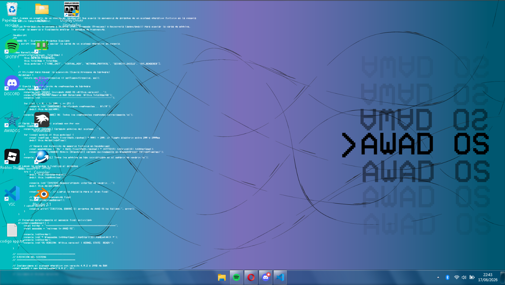
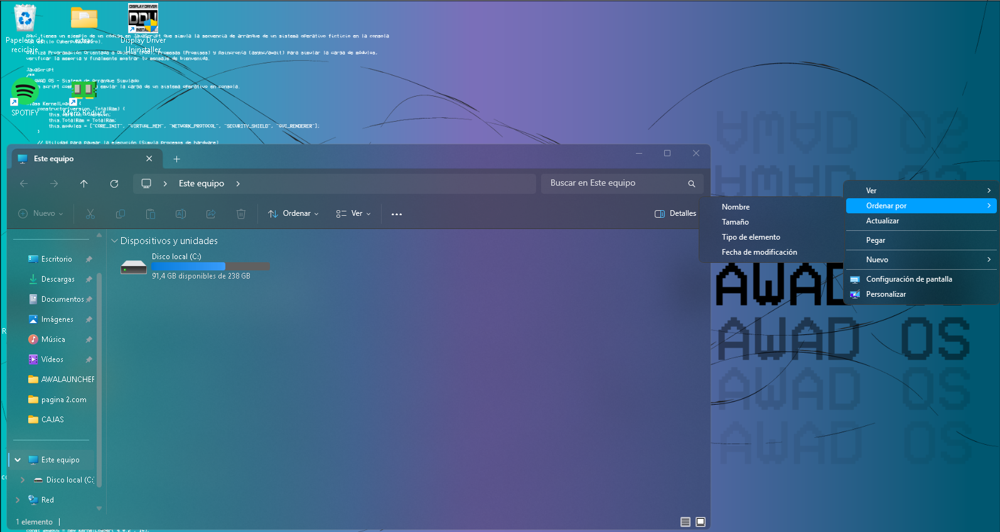
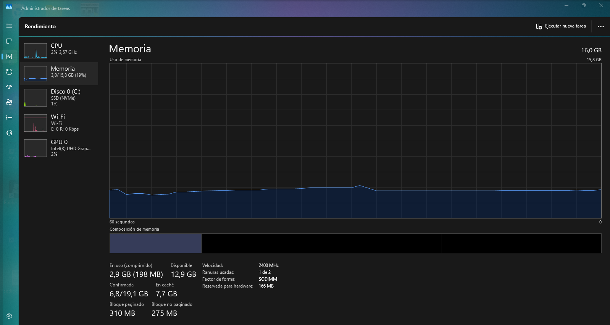

SISTEMA OPERATIVO AWAD OS
AWAD OS es una versión optimizada de Windows, diseñada con el objetivo de maximizar el rendimiento en hardware limitado y reducir la huella de recursos del sistema. A diferencia de una instalación estándar, AWAD OS prioriza la eficiencia, el control del usuario y la telemetría nula.
1. Eliminación de Bloatware
El primer pilar de AWAD OS es la limpieza profunda del entorno de ejecución. Esto incluye: Desinstalación de aplicaciones nativas, software de terceros preinstalado y servicios de marketing.
2. Optimización de Procesos
AWAD OS ha sido ajustado para minimizar el uso de memoria RAM y ciclos de CPU en reposo: Control de Servicios: Deshabilitación de servicios de fondo no críticos (ej. telemetría, actualizaciones automáticas forzadas, diagnósticos de red que no son necesarios para el usuario final). Ajustes de Registro (Tweaks): Modificación de las políticas de gestión de memoria y priorización de procesos para asegurar que la mayor cantidad de recursos esté disponible para el usuario y sus aplicaciones, no para el sistema operativo. Reducción de procesos: Al iniciar, AWAD OS mantiene un conteo de procesos reducido, lo que disminuye drásticamente la latencia del sistema.
3. Privacidad y Seguridad
Al eliminar la telemetría integrada de Windows, AWAD OS garantiza: Privacidad por diseño: Bloqueo de los servidores de envío de datos de Microsoft, impidiendo el rastreo de uso y la recolección de hábitos de navegación/sistema. Control Total: Un entorno donde el sistema operativo no ejecuta tareas que el usuario no ha solicitado explícitamente.



Instalación por Gofile: Descargar aquí